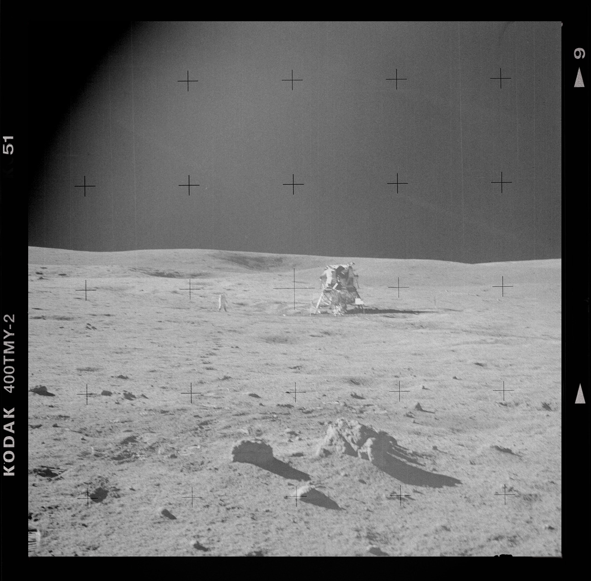
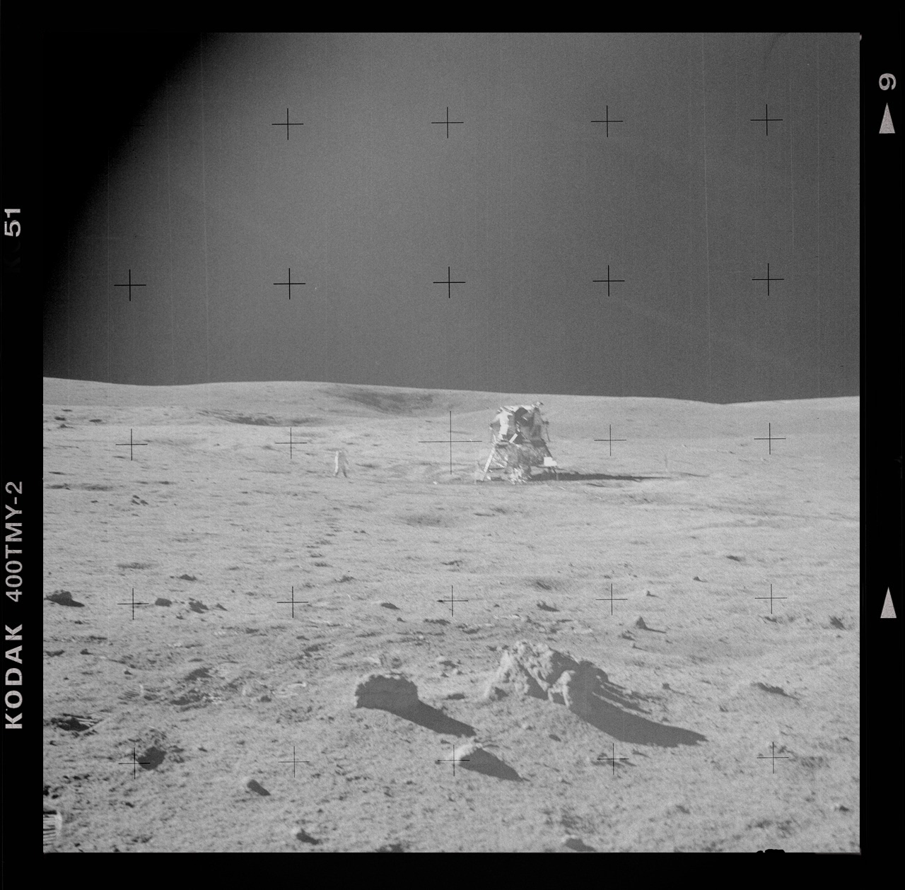

A spacesuit consists of twenty-one layers that allow the human body to separate itself from the earth. Poems + consists of layers of space/s. We are salt or star or absence of gravity. We are lines and points and pinholes. And what does it mean to stand in proximity of a poem + ? Or to be contained in its actual environment? We are unsuited for the realm of space. And suited for our journey out there. We climb inside intending to endure a lack of breathable air. We send our bodies willingly off through the atmosphere. + Grief + grief
Emily Dickinson marked her poems with ‘+’ signs near a word to indicate a variant to that word. She did not choose among her variants + leaving them as concurrent alternatives. A variant may appear + + above the word + to the side of a line + underneath a word + at right angles to the poem. Whole poems may be variants of each other.
Stanza 1: In the closet, the spacesuit + lives, a deep white in its vinyl bag, its crepe ivoried, tartared
like a tooth, feeding on what leaks throughthe zipper’s fervent mesh, an unmentionable,
unworn, waiting, immortally in mind. Open + Alice Fulton, "Maidenhead"
like a tooth, feeding on what leaks throughthe zipper’s fervent mesh, an unmentionable,
unworn, waiting, immortally in mind. Open + Alice Fulton, "Maidenhead"
Much of the language for the technical components and construction of the lunar spacesuit are awkwardly of-the-body: bladder, ribbed rings, webbing, joints. Though there is also: convolute, mylar, whisper-thin latex, infinitesimally small seam allowances. A spacesuit is both bodied and intervention of body. The discreet secret of space travel: in spite of NASA’s attempts to find a suitable military engineering solution, astronauts were outfitted by the same company that made bras, rubber girdles, and foundation garments shaping the figures of women to fit the 1940’s New Look of fashion: all hand-constructed points and lines, cones and compressed contours.
The lunar surface cameras were fitted with Réseau plates, clear glass panes etched with a precise pattern of crosshairs, which would allow analysts to correct image distortion and calibrate distance and height’s both on the Moon’s surface and from space. + The Moon, 1968-1972 +RÉSEAU:A network A system of weather stations A net of fine lines on glass plates A foundation or meshed ground in lace An intelligence network
Dicksinson’s one, white dress is + in the east bedroom of her house. + a museum, which was her house. Dickinson’s one, white dress + a copy. + reproduction. Of which there are actually two.Three white dresses are not a mythology. They are a folktale. There were three white + dresses +found in the forest, each abandoned by the side of a lake.
Dickinson’s three white dresses are made in a style called a wrapper. A dress meant for being in the house +for house work. This is equivalent to a kind of bathrobe. Dickinson’s failed trousseau: her one, white + twopainstakingly replicated bathrobes.
+ RéseauWe inherited + glass plates etched + stitched with a net of fine lines, a precise pattern of flowers ++crosshairs.We set our tables. We corrected image distortion, calibrated distance & height on the Moon’s surface. + We made milk made from lace. + We made a + trousseau + foundation ground in lace.
In the first letter + on the first page of Frankenstein + the artic seafarer writes to his sister— I may there discover the wondrous power which attracts the needle;
and may regulate a thousand celestial observations, that require only this voyage
to render their seeming eccentricities consistent forever.
and may regulate a thousand celestial observations, that require only this voyage
to render their seeming eccentricities consistent forever.
Here are your needles:
________________+Dear
________________ +Dear
________________+Dear
We sang:There is aneedle fairThough no ap-pearance indicate — 'Tis threaded inthe Air —
+ When she arrived at ILC’s spacesuit plant in 1965 or 1966, + a new seamstress would be greeted by her shop-floor supervisor, and ‘taught to sew again from scratch’
In a time of ambulances our grandmothers + our mothers + we + began + sewing bras + girdles + on the factory floor. Then we were swept up like shed pine needles. Then our straight pins & other fasteners for precision were + taken away. Then those who wanted the moon came &+ whether by custom or coincidence, no men were employed on ILC’s sewing floor
We were asked unprecedented precision + denied + the tools used to maintain + sewing accuracy+ a single pin was discovered between layers of a spacesuit prototype + an X-Ray machine wasinstalled on the shop floor to scan suits for errant fasteners. In the daughter’s family any marriage with a bride wearing white has ended in + a white dress + is considered bad luck + an ill omen + to not wear + something in any other color isto invite the fates to + the forest something old + something new + something borrowed + something +A daughter hedges her bets & wears a blue + dress. She does not carry + scissors.
+ thread. + a needle
+ her desire
Though she embroiders + a quote for her future spouse on a circular pocket square. Neither of them now remember the quote: something about saying things + meaning another. + about a future in which people don’t know what we mean + when we say + +
+ blue
In a time of ambulances our white + wedding + dress crushed inside the cedar chests. Stanza 4: how difficult to have only one + spacesuit and that onewhite. Unlikely really, likely to be a myth.
+ like any couture customer, the astronauts would often change their minds about fit details, sometimescausing their entire suit to be taken down to its components and carefully reassembled +
We began to sew blue spacesuits so we could buy milk. We sewed day& we sewed night for the astronauts + walking behind stage after every performance takingmeasurements. They loved us. We were sewing + the astronauts were singing + the milkwas in our bodies + the baby was turning.They sang:Don't put up my Thread and Needle –I'll begin to SowWhen the Birds begin to whistle –Better Stitches – so –We sang:Fetch the seam I missed —Closer — so I — at my + sleeping -Still surmise I stitch —
+Thread Needle+Sew+sighing
+Along with Dickinson’s one + white + dress there has been one + photograph. + In 2007 a second possible daguerreotype was discovered. The image has been subject to intense forensic
+ attention. + obsession.
+ Searching the Dickinson textile collection surfaced one + checked + swatch + that could be a match + the dress in the photo. + obsessive
+ The original image is small + will require special tools to extract + necessary information about the dress.+ spacesuit
+ The other possible sitter in the portrait + Kate Scott Turner + wears a griever’s + black as would have been appropriate for—+ Magnification revealed checks on a + blue + background The spacesuits are made of lace: noThe spacesuits are lying on the + factory floor.
+theater+Spring’s
The abandoned spacesuit is found on the side of the lake. We climb inside. + + We wake + we mend it. The astronauts left. Our dead mothers left. We did not leave. We dug a hole in the earth + we put the bodyof our baby girl in the box from the sewing machine + we dug + we ate + the earth. We dug the hole ourselves.We did not want such a tiny cemetery. + We let the hospital’s earth have the box. We did everythingourselves. We even married somehow. We even managed not to have another child—holding out +
The first space launch-to-landing broadcast showed: the + dress + she was wearing was not aluminized silver, but the same white high-temperature nylon as the link-netunderneath it. The high temperature nylon provided a superior surface, and did not run the risk of the astronaut dazzling + herself with +her clothing while facing the unfiltered sunlight. + Astronauts working on the International Space Station are now outfitted in + blue +
We wanted to understand how we were made. We peered through openings—a wrist,an ankle, the neck hole—with a flashlight. Before we knew to take our + spacesuits to be X-Rayed + we illuminated + ourselves like manuscripts. We marked our edges with tailor's chalk. We sewed pockets to carry + our punctures. +In a time of ambulances + we discover eachother + by the threads of our dresses.
Stanza 8: You understand the + spacesuit in stanza one is mine,my one white + spacesuit, in which I’ll never
was always + snow.
In a time of ambulances there was + singing + away + in + the dark. We wanted to find a way to + preserve + the landscape. + reproduce + an heirloom + We kept everything cold. + The mule deer kept punching their hooves through the surfaceof snow like a + sewing machine needlethrough the fabric of our spacesuits. According to the archives, Emily Dickinson has at least nine poems that contain the word + needle. Two of which use the image of the compass. The rest of which involve sewing. + Dickinson foundthe sewing of the family’s wardrobe to be + intimate + a heralding intimacy. Needles not about stitching are used + to wound + to puncture + to stab + to mark.They sang: But not the Grief — that nestled Closeas Needles —
In a time of ambulances we have urges to puncture the spacesuits from within. We call these desire.+ Eros of pinholes + Eros of limited air + Eros of seepage & light.+ To be pinned open + To be pinned down + To be pinned up + To be pinned under. + If we say we sing to startle ourselves does this mean to discover the pin & then to use it? + To undress ourselves until the puncture is discoverable. Who will press their fingers to this slow leak?
Inside the spacesuit—: moonvines + nearly baroque alstroemeria left last year at + the deadmothers’ grave. In place of convolutes the antlers + a mule deer + the leaves getting back on the trees. What did we find lit inside? + Inside the spacesuit: + Spring.
About heirlooms, you know what they say—We will have to split one needle/this winter—one end for me,/one end for air./ How we make do and mend is not always fair.